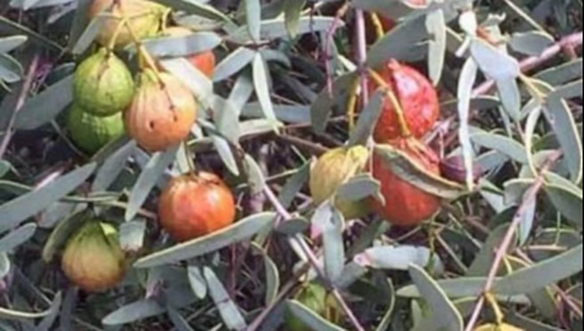
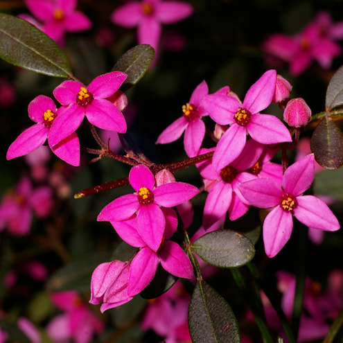
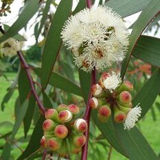
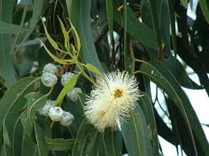
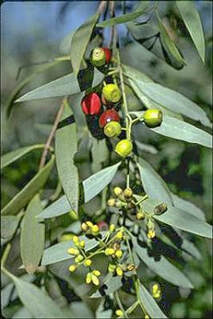
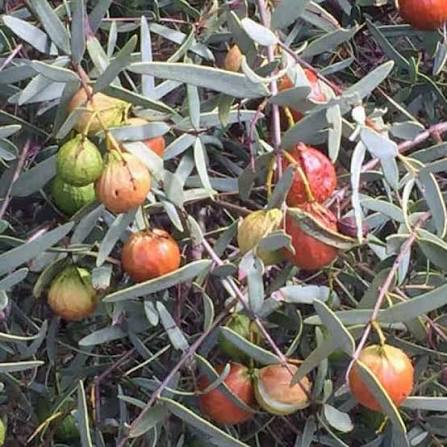
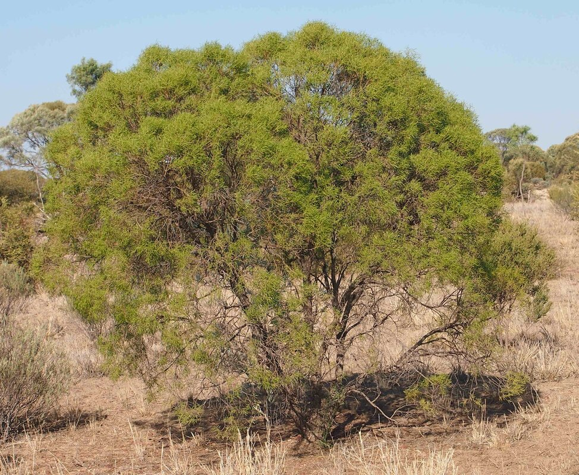
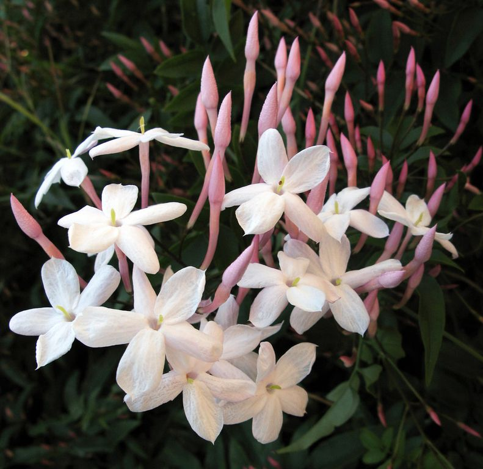

How Australian Perfumery Rewrites Fragrance History
By Ana-Elena Sastrias Certified Natural Perfumer and Aromatherapist Exploration to Australian Native Botanicals HeritageAustralia’s varied climates and soils have shaped the unique qualities of its botanicals. Australia is home to more than 18,000 described native vascular plant species, many found nowhere else on Earth. Shaped by an ancient evolutionary history and the long isolation of the Australian continent, Oceania. These botanicals represent a living botanical heritage that reaches back to the landscapes of Gondwana which began around 140 million years ago. Australia subsequently separated from Antarctica around 50 million years ago, leaving its flora increasingly isolated. Their extraordinary diversity offers perfumers an exceptional palette of aromatic materials with which to tell the story of Australia through scent. This is why Natural Perfumery is so vital, not only in fostering a new generation of creators but a generation of storytelling.
Australia is reshaping luxury perfumery by blending its rich native botanicals with refined craftsmanship.
Over the past decade, Australian natural perfume brands have gained international recognition for their distinctive use of natural botanical raw materials. Consumer interest in natural perfumery and natural cosmetics has grown through increased awareness driven by social media, marketing campaigns, and Australia’s long-standing relationship with native botanicals.
Consumers increasingly seek products perceived as natural, multifunctional, and environmentally conscious, including organic skincare products and innovative natural formulations.
A defining feature of Australian luxury perfumery is its dedication to natural ingredients and the exploration of botanical alternatives to synthetic materials. Native botanicals such as Boronia offer authentic and intricate scent profiles that are difficult to reproduce convincingly. Beyond their distinctive aromas, some of these botanicals are also valued in aromatherapy, skincare, and
traditional applications. Eucalyptus, for example, is widely associated with refreshing and invigorating aromatic qualities, while Australian Sandalwood is valued for its warm, grounding character. This commitment to natural ingredients can enhance the sensory experience while encouraging sustainable practices and strengthening the connection between fragrance and Australia’s rich and
diverse ecosystems. Australian growers and distillers collaborate to extract aromatic materials from distinctive ingredients such as Australian Sandalwood, Boronia, Wattleseed, Prostanthera, also known as Australian Balm Mint Bush, paperbark-derived raw materials, Niaouli, and Kunzea. Together, these scents help describe the plants and landscapes that form the unique olfactory identity of Australia.
Among Australia’s celebrated perfume houses and fragrance brands are Who Is Elijah, Roemy, Aesop Fragrances, Goldfield & Banks, Raconteur, The Labo Organics, One Seed, Mad et Len, Mutky Botanique, and Solid State. Other Australian brands working across natural perfumery, aromatherapy, natural
cosmetics, and herbal products include Wild Wood Oils of Australia, Petal and Wood, Rinascentia, Ere Perez Natural Cosmetics, Nhiru, ÆS Création Naturel, and Herbal Extracts of Australia. The Challenges of Natural Perfumery
Natural Perfumery do not come without their challenges, like the production and selection of ingredients. ”Red List” provides a parameter in the selection of the least endangered botanical species. This list contains critically endangered and threatened ingredients. Ethical Natural Perfumers will use the least endangered ingredients from extinction or suppliers who utilise legal and ethical production practices. Buying from brands that put the product over profit by creating a smaller batch with curated ingredients means a small production footprint and ultimately a more ethical product.
“Niche perfumery” or “Custom made perfumery” is about people wanting to have more unique experiences or products in their lives that match their personality and values or assist in expressing their identity through the choices they make. Many Australian Natural Perfume brands are inspired by the “outdoors” having a fresh aspect with woody, smokey amber and vanilla facet notes. The use of Australian Native Botanicals in Natural Perfumery has been the key for achieving unique fresh fragrances.
Australian Natural Perfumery has been influenced by the European French Perfume traditional processes, adding innovation and the use of Australian Botanicals. Australian Fragrance Preferences and Botanical Materials
Australian consumers are drawn to a variety of fragrance profiles, including Fig, Plum, Frangipani, and White Musk accords. Oakmoss, Cypriol Nagarmotha, Cistus Labdanum, Birch, and Tobacco have also been used as base-note materials in Fougère- and Chypre-style perfumes.
Some Australian perfume houses are taking the opportunity to incorporate Australian botanicals into their signature natural perfume formulations, including:


Boronia 1. Boronia — Boronia megastigmaBoronia and its essential oil are renowned for their distinctive, complex aroma. The fragrance combines fruity, floral, and green nuances, with facets that may suggest raspberry, apricot, violet, and freesia. It blends particularly well with Sandalwood, Clary Sage, Bergamot, and floral materials and can be used in Chypre- and Fougère-inspired compositions. 2. Wattleseed — Acacia species
Wattleseed comes from species within the Acacia family. Roasted Wattleseed is known for an aromatic profile reminiscent of toasted coffee, sweet spices, raisins, and chocolate. It has applications in food and can also provide an intriguing aromatic dimension in natural perfumery.
3. Orange Jessamine — Murraya paniculata
Also known as Orange Jessamine or Mock Orange, Murraya paniculata is found in parts of Australia and across South and Southeast Asia. It has an exquisite, intoxicating aroma, offering a sweet, honeyed, distinctly citrus-floral fragrance. Its complex character can be sufficiently expressive to function as a central element within a perfume composition. 4. Niaouli — Melaleuca quinquenervia
Niaouli has a floral, fresh, and camphoraceous aroma, adding an uplifting aromatic quality that can be used in perfumery and body-care formulations. 5. Kunzea — Kunzea ambigua
Kunzea essential oil, particularly associated with Tasmania and southeastern Australia, has a clean, fresh, and distinctive aromatic character. Its invigorating profile makes it suitable for natural perfumery and aromatherapy applications. 6. Australian Balm Mint Bush — Prostanthera teretifolia
The essential oil of Prostanthera teretifolia, also known as Australian Balm Mint Bush, has a eucalyptus-mint character with a fresh lime facet. This creates a clean, energising, and invigorating aromatic profile.
|  Eucalyptus Radiata |  Eucalyptus Globulus |


Several Eucalyptus species, including Eucalyptus globulus, Eucalyptus radiata, and Eucalyptus citriodora, have long been used in healthcare, aromatherapy, perfumery, and household applications.
Their essential oils offer distinctive fresh, green, camphoraceous, or citrus-like aromatic profiles, depending on the species. 8. Tea Tree — Melaleuca alternifolia
Tea Tree, Melaleuca alternifolia, is widely known for its use in skincare, household products, aromatherapy, and other applications. In perfumery, its essential oil contributes a characteristic herbaceous, earthy, woody, and medicinal aromatic profile. 9. Rosalina — Melaleuca ericifolia
Rosalina, Melaleuca ericifolia, is another Melaleuca species whose essential oil has a softer, more floral and lavender-like aromatic character than traditional Tea Tree. It can contribute a calming and fresh facet to natural fragrance compositions. 10. Honey Myrtle — Melaleuca teretifolia
Honey Myrtle, Melaleuca teretifolia, has a delicate, honeyed, lemon-like, and refreshing aroma. Its essential oil is used in aromatherapy and fragrance applications and is valued for its bright, uplifting character.
|  Sandalwood |  Sandalwood |


Australian Sandalwood essential oils offer distinctive woody profiles. Santalum spicatum, commonly known as Western Australian Sandalwood, has a dry, woody, balsamic character.
Northern Sandalwood, Santalum lanceolatum, offers a more complex floral, citrusy, earthy, and woody profile. Australian Sandalwood is widely used in modern perfumery and aromatherapy and has a long history of cultural use by Aboriginal Australian peoples.


Buddha Wood 12. Buddha Wood — Eremophila mitchelliiBuddha Wood, Eremophila mitchellii, produces an essential oil with a deep, dark, woody character often compared to Oud, with balsamic and incense-like facets. It can be particularly effective as a base note and in compositions intended to evoke depth, warmth, and meditation. 13. Blue Cypress — Callitris intratropica
Blue Cypress, Callitris intratropica, is characterised by a distinctive, crisp, woody, and grounding fragrance. It can blend well with materials such as Patchouli, Lavender, Clove, and Star Anise.


Jasmine 14. Jasmine and Jasmine-like Australian CultivationSeveral Jasmine species and Jasmine-like plants are cultivated in Australia.
- Star Jasmine, Trachelospermum jasminoides, is not a true Jasmine but is valued for its sweet, honey-like aroma, which becomes particularly noticeable in the evening.
- Pink Jasmine, Jasminum polyanthum, produces a strong, profuse, and heady sweet fragrance from its pink buds and white-to-pink star-shaped flowers, particularly during late winter and spring.
- Native Jasmine, Jasminum suavissimum, develops an intensely sweet fragrance during spring and early summer nights.
Australia’s Emerging Olfactory Identity
As we can see, Australian perfume brands have an extraordinary opportunity to draw upon the diversity of Australia’s native aromatic botanicals. These materials can contribute an authentic Australian dimension to fragrance while creating distinctive olfactory signatures inspired by plants and landscapes that are not widely represented in international perfumery.
This represents an important opportunity for Oceania to establish a stronger presence on the global map of aromatic raw materials for natural perfumery, natural cosmetics, aromatherapy, and herbal products. Australian Natural Perfumery is not simply adopting an existing fragrance tradition. It is building upon European and French perfumery techniques while developing a distinctly Australian vocabulary of scent—one rooted in the country’s botanical diversity, landscapes, growers, distillers, and cultural heritage.
The future of Australian perfumery may therefore lie not only in creating beautiful fragrances, but in telling the story of a continent through scent.